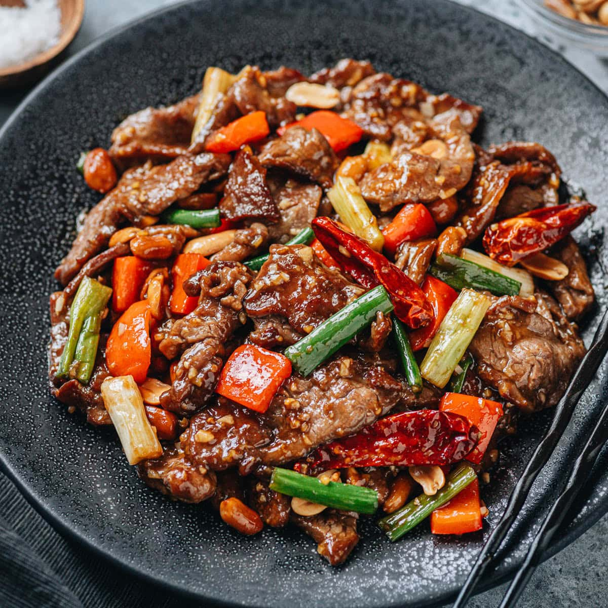
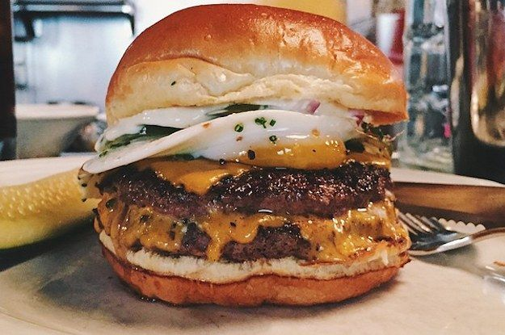

To start off, both sausage pizza and burgers are natural go to choices when picking a favorite food.
They are delicous and are best in small instances as eating these food often will likely lead to health problems and truly what makes them great is their taste after not eating them in so long.
Kung Pao Beef serve a special spot in my heart as it was something I had found by luck one day while searching to eat some new chinese quisine.
It was a random choice and it was one of the best choices ever made in my life
 